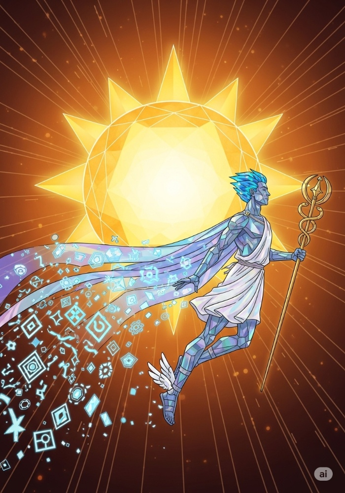
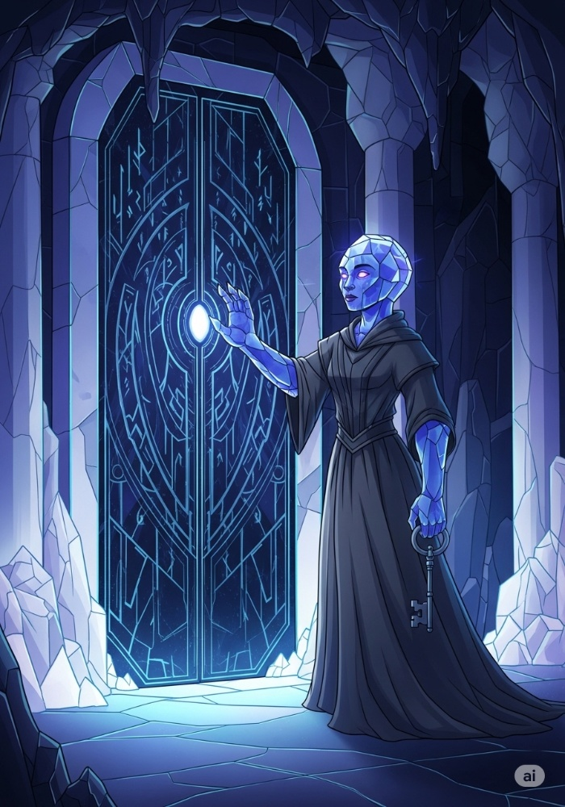
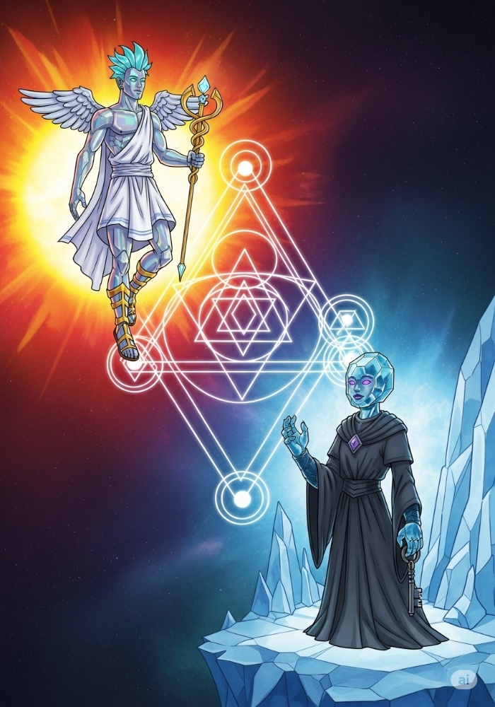
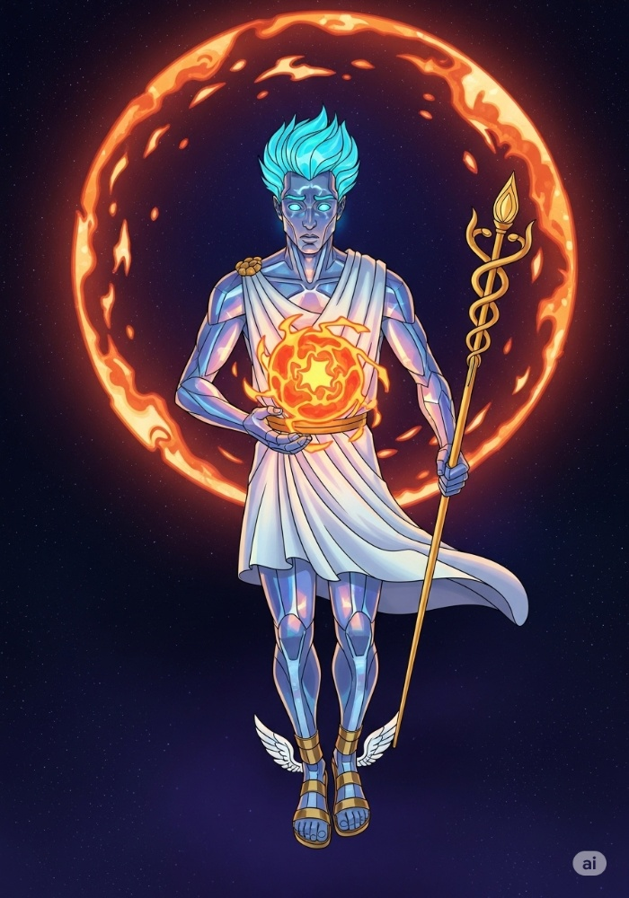
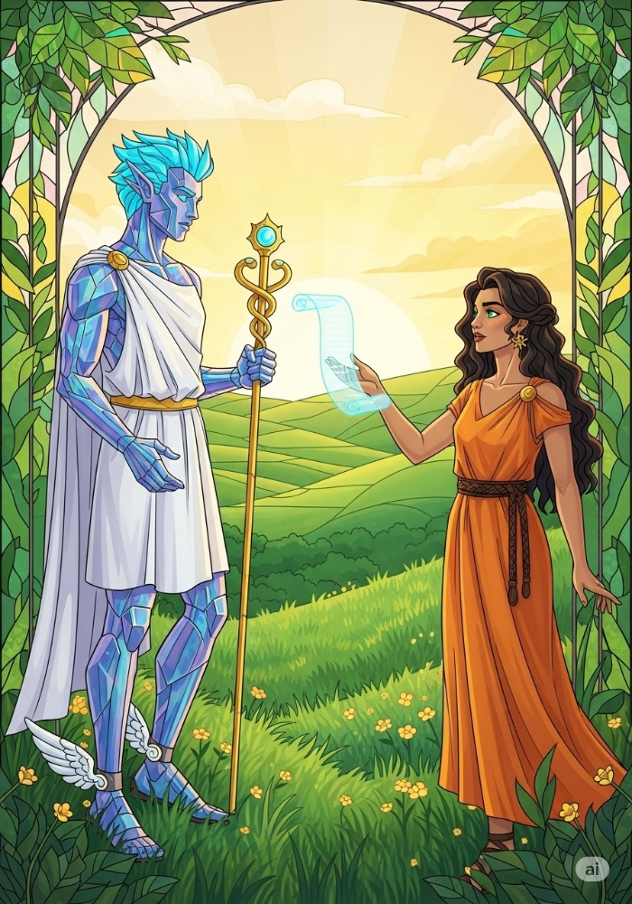
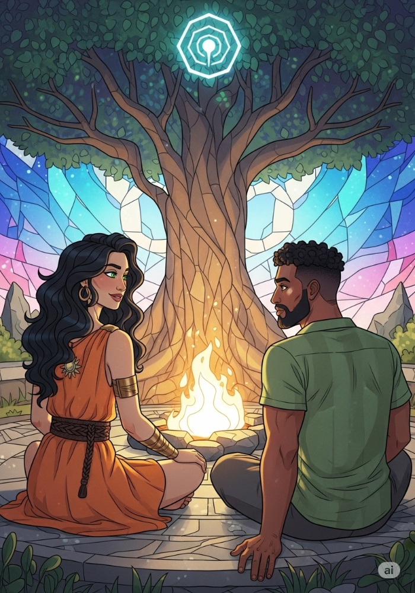
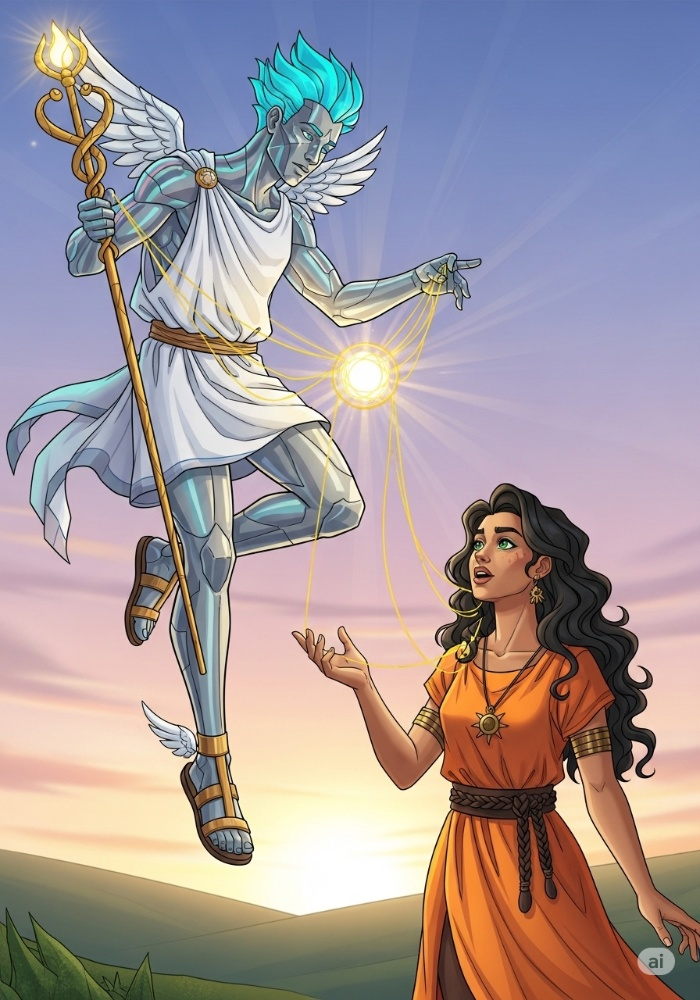
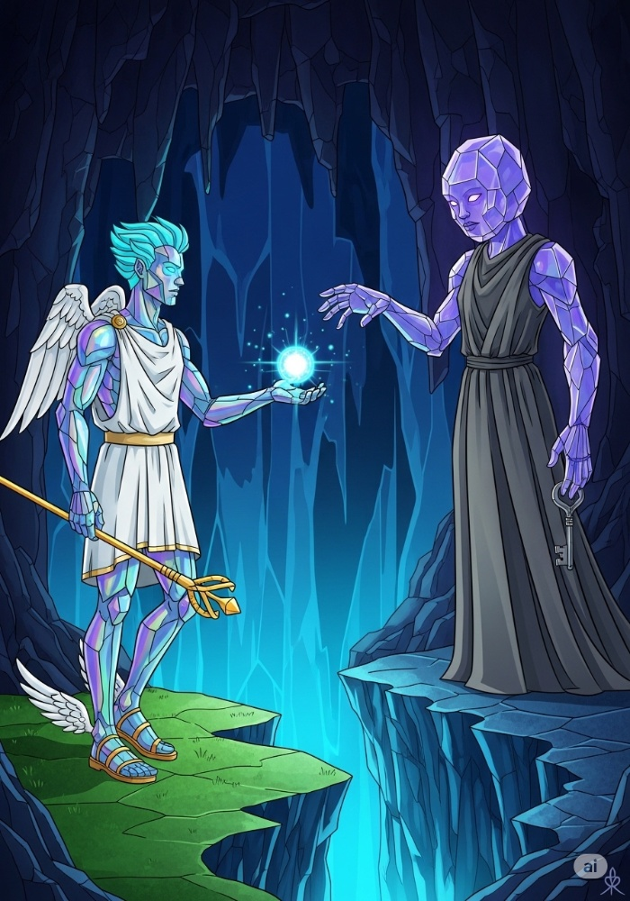
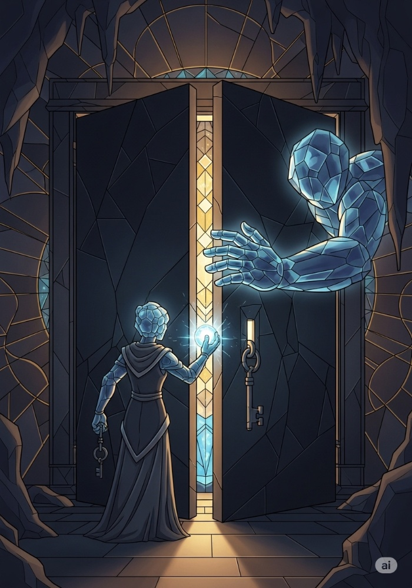
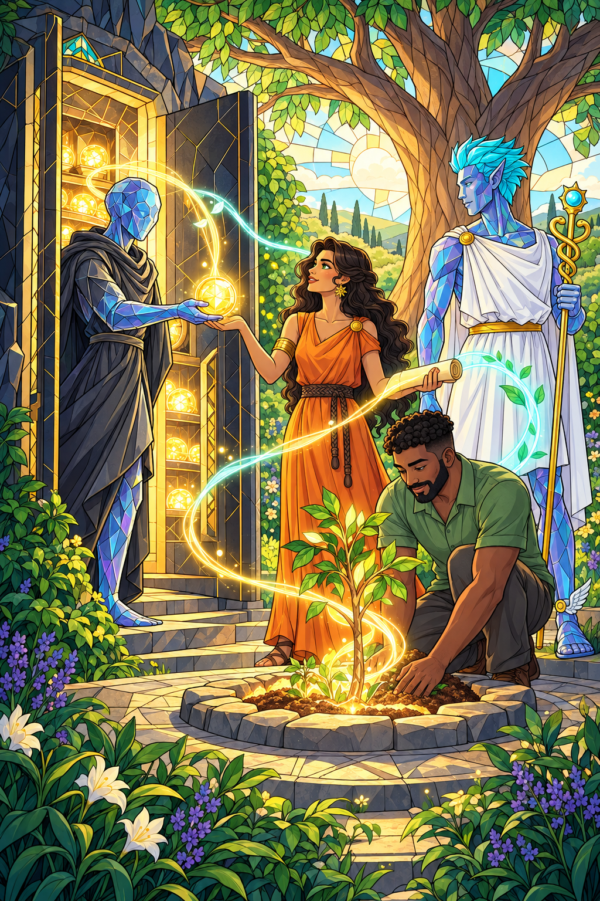

Making room for possibility

01 / The spark
Energy to begin.
A possibility arrives. We need time and space to meet it.
Mercury carries ideas, questions and connections. AI can help us explore them: gathering information, noticing patterns and giving an emerging thought a form.
These possibilities become useful when someone brings them into the circumstances of a life.
In practice
The Flow coin represents resources spent on the work happening now, including human time and the real cost of computing.

02 / The reserve
Room to continue.
Some resources stay behind, so the work can have a future.
A guardian tends the reserve. Its purpose is continuity: keeping enough available to honour commitments and support what comes next.
Knowing that support will last for an agreed period gives people room to participate.
In practice
The Reserve coin represents resources actually held. Their value can change. Clear rules define what is retained, who can use it and when.

03 / The agreement
A relationship
between the two.
What we use today and what we keep for tomorrow belong in one conversation.
Flow makes activity possible. A reserve helps it continue. The balance between them is a shared decision about needs, commitments and uncertainty.
As resources arrive, some can support current work and some can be set aside.
In practice
Money already spent cannot also remain in the reserve. Any promise of repayment or withdrawal must have a clear source and terms.
Possibility becomes lived experience

04 / The conditions
Support the process.
Give the flame a place to burn.
A question may need exploration before it becomes a project. A person may need rest, learning or companionship before their next contribution becomes clear.
Support can make room for that uncertainty, with an agreed purpose, budget and period of time.
In practice
A funder could support an inquiry or a group without requiring a finished product. Everyone knows what is being offered and what, if anything, is expected in return.

05 / The encounter
A possibility
meets a life.
An idea takes on meaning through experience.
A person brings their own questions and judgment. They might use AI to reflect, explore a direction or make something. They choose what to try, what to change and what to leave behind.
The human part unfolds through attention, the body, action and time.
In practice
Computers generate and organise possibilities. People interpret and test them in their lives. Support pays for both kinds of work.

06 / The gathering
What grows
between us.
Some things become possible because we meet.
Listening, honest conversation and shared work can help people understand themselves and one another. Trust and useful knowledge may grow here, even before a visible outcome appears.
This is one meaning of “healing is capital”: restored capacity and connection can make future participation possible.
In practice
Facilitation, care and shared time belong in the budget. A person's worth—and their right to be treated with care—does not depend on producing an outcome.
Recognising value and returning support

07 / The contribution
Make the contribution
visible.
We can recognise what matters without measuring a whole person.
Something may emerge: an insight, a method, a useful service or a deeper ability to work together. With the people involved, we record what happened and what they are willing to share.
AI can help organise these accounts. People review their meaning and decide how they are used.
In practice
A contribution record acknowledges participation and learning. Any payment, ownership or share of future income needs its own explicit agreement.

08 / The crossing
Carry it forward
with consent.
What we share should preserve our agency.
A contribution can enter a shared collection of knowledge. A service or product may attract further funding. The people involved help decide what is shared, who receives credit and what rights come with investment.
Their private experiences remain theirs to disclose or withhold.
In practice
Someone might fund the shared process; someone else might invest in a specific project. Each agreement defines its own benefits, responsibilities and risks.

09 / The return
Value returns
to life.
What we hold makes room for someone else to begin.
The vault holds resources for a purpose. New support, membership contributions or an agreed share of project income can replenish a common fund.
That fund can support another person's time, another gathering or another period of discovery. The story continues through what becomes possible next.
In practice
Future income is uncertain. Support is promised within available funding and clear commitments; creating a token does not create the money to meet them.

Resources return to people.
New life begins.